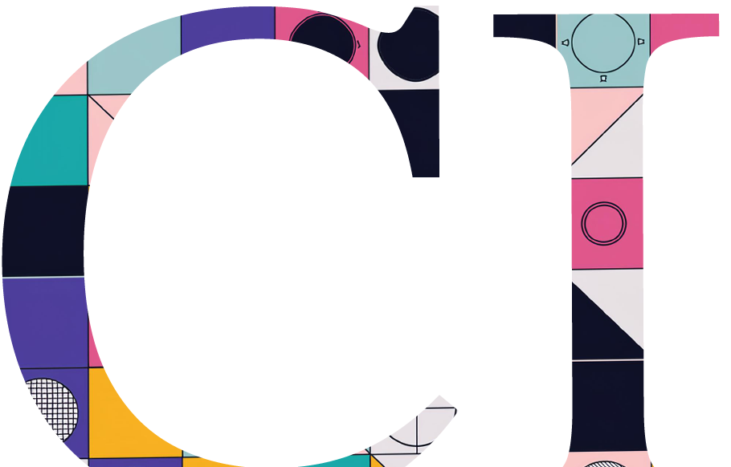

Courts IllustratedJT Dettman
Director of Sales and Marketing at Austin Courts & Floors. I write and film plain-spoken guides on what it really takes to build a backyard court.
About
I build courts in Central Texas: pickleball, basketball, tennis and multi-sport surfaces for homeowners, schools and HOAs. Most of the people I meet have already spent weeks online trying to figure out what a court costs and who to trust.
That's why I started writing for Courts Illustrated. Every article and video here answers a question a real customer asked me on a job site: how thick the slab should be, why some courts crack in two years, and what a fair price looks like.
If you're planning a court, read a few of these first. If you still have questions, send me a note at the bottom of the page.
- CompanyAustin Courts & Floors
- Service areaAustin & Central Texas
- BuildsPickleball · Basketball · Tennis · Multi-sport
- SurfacesPost-tension concrete · Acrylic · Modular tile
Works at
Company profileAustin Courts & Floors
Court builder serving Austin and Central Texas: pickleball, basketball, tennis and multi-sport courts, plus indoor sport flooring.
- Real personJT Dettman, identity confirmed
- EmploymentConfirmed with Austin Courts & Floors
- Completed projectsPhotos reviewed by Courts Illustrated
- License & insuranceVerification date goes here
Videos
Open channel ↗


Written by JT
All articlesTarkett vs Taraflex: a head-to-head volleyball floor comparison
Wear layer vs compact layer, ASTM shock classes, moisture warranties, and why "2 mm" can mislead.
ProblemsOur tennis courts crack every year. Three ways to fix them
Resurface, an unengineered post-tension cap, or a fully engineered slab, and what each one actually solves.
How it worksEngineered slab or standard post-tension: which does your court need?
What a geotech report tells you, and when treating the soil costs more than the court.
ComparisonWhat a "seven-layer" court surface really means
Rubber cushion under acrylic feels great at first. Here's what it looks like in year ten.
CostPour now, add shade later: the three tiers of concrete
Patio, pergola-ready or foundation. Why the middle tier costs little now and saves a cracked slab later.
How it worksWhy we don't coat courts in winter
Cure time, ground temperature and moisture, and how to use the court before it's painted.
How it worksFence details that matter: round posts, a top rail and a 4-inch inset
Small choices that protect players and keep post-tension slabs from cracking at the edge.
ProblemsWhat to put next to your court, and why fine DG is the worst choice
Treat acrylic like stucco: keep the edge two inches above grass and beds.
CostHow to compare three court bids line by line
Hoops, surfacing, fencing and extensions priced separately, so a board can choose what to build.
Questions I get asked
Is it hard to tell if the ball is in or out on a one-color court?
No. Your eye reads the yellow ball against the white line, not against the court color. An all-one-color court with white lines plays fine. Dark or colored lines are what make calls hard.
How much slope should a court have?
We build about 99% of our courts at 1%, or 1 inch every 10 feet. That's about 3.6 inches across a 30-foot court. Flatter still drains, but slower: more ponding, more squeegeeing and more dirt staining.
When can you paint the court? Why not in winter?
A new slab needs at least 30 days to cure, and then the ground has to warm up and dry out. A slab poured in December usually gets coated in February or March. In the meantime we can put up the fence, nets and even temporary lines so you can play.
Square posts or round posts? Do we need a top rail?
Round. If someone runs into a post, they hit a blunt surface instead of a corner, and that's why sports construction standards use round posts. Get a top rail too. Without one, the fence bends when players run into it.
Why are the fence posts set in from the edge of the slab?
Posts right at the edge crack the concrete, especially on post-tension slabs. We set them about 4 inches in. That also leaves no gap where someone could roll an ankle between the fence and the slab edge.
What should go right up against the court edge?
Treat acrylic like stucco. Keep grass, mulch and beds about 2 inches below the court surface, or use a rock border, so water can't wick under the coating and peel it. Pavers can be flush. Avoid fine quarter-inch decomposed granite: it tracks onto the court and scratches it.
Portable pickleball net or in-ground posts?
Modern aluminum portable nets weigh 30 to 40 pounds, cost less, and kids can move them. The tension is a little looser. If you play a lot, in-ground posts are best. Skip the sleeves and you can still core holes later.
Can we pour the slab now and add a shade structure later?
Yes, if you build it for that now. A pergola-ready slab adds reinforcement, an interior beam and a footer wherever a column will land. It adds very little cost. Drilling posts into a plain 4-inch slab later cracks the edges off.
Do fence-mounted light bars work as well as poles for tennis?
For many courts, yes. Light bars mount on the fence and aim down, so neighbors see a hard edge of darkness, and nothing on the ends blinds the server. They're great for retrofits. For poles, three is good recreational light, four is better and six is tournament level.
Can we sell sponsor or donor names on the court to fundraise?
Yes. We can stencil names and logos and paint them on, just like the lines. For a yearly fundraiser, paint over old names instead of swapping tiles, since sun-faded tiles won't match new ones.
Projects
Full gallery


Real Austin Courts & Floors projects, from our CompanyCam job photos.
Reviews that name JT
Get in touch
Planning a court?
Tell me what you want to build and where. I'll reply myself, usually within one business day.
- CompanyAustin Courts & Floors
- Phone(000) 000-0000
- Emailyour email here
- AreaAustin & Central Texas